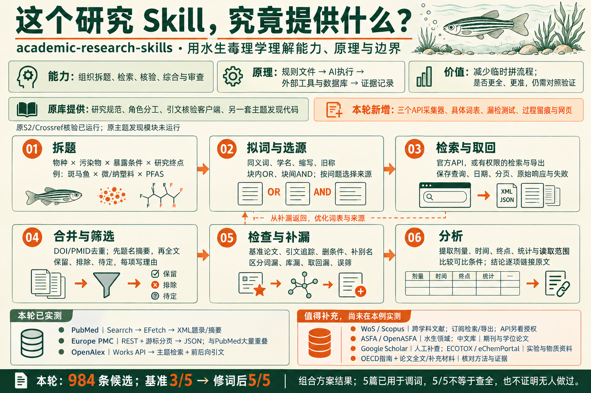

它能做什么
把拆题、检索、来源核验、证据综合、论文写作与审查组织成可执行的研究流程，包含角色规范和部分工具代码。资料来自外部来源，具体判断由AI与研究者完成。
载入论文、研究判断与实际执行记录。
请检查数据文件或本地服务后重试。

把拆题、检索、来源核验、证据综合、论文写作与审查组织成可执行的研究流程，包含角色规范和部分工具代码。资料来自外部来源，具体判断由AI与研究者完成。
deep-research：拆题与研究综合；sr-screener：文献筛选；academic-paper：论文写作；academic-paper-reviewer：稿件审查；academic-pipeline：全流程调度。
适合选题探索、综述与前作调查、证据核验、已有材料整理成稿、论文修订、审稿准备及研究阶段交接。水生毒理学是本次具体研究案例。
复用研究步骤、角色和检查要求，减少反复临时叮嘱，让来源、判断与失败可回查。查全、科学准确性以及比直接问AI省多少时间，仍需要独立验证。
五个顶层Skill不等于五个都已完整运行；本例的三个API采集器与漏检实验为额外适配。实际运行、原有能力与建议来源分别记录。
下面四项为第一轮历史规模；新增原生检索、修订与漏检验证见“03 检索实测”。
从你的水生毒理学方向出发，实际执行选题收窄、文献调查、来源核验、证据比较和修订，并保留每一步的材料。
获取真实 Skill，以水生毒理学开展实际研究，把过程与结果做成网页。
微/纳塑料 × PFAS × 斑马鱼。由代理收窄范围，尚不是你确认的正式论文题目。
已经形成可回查的文献调查与报告；关键全文和正式选题仍待进一步核实。
能力、价值、原理，以及从拆题到来源获取、补漏和分析的完整路径
以下机制审计对照第一轮执行；第二轮新增原生检索与漏检检查，见下一节“检索实测”。
从检索词到逐条筛选，再检查哪些论文被找回、哪些可能遗漏。
这里保留第一轮37条网页查询与报告过程。第二轮检索的分母、来源与验证单列于上一节。
这里展示本轮检查的命题及得到的限定；这些命题由代理构造，不代表你原来相信的结论。
下列10篇核心集合是首轮历史材料；本轮新增的是检索与初筛记录，尚未据此重写科学综合。
检索已纳入的文献，区分研究角色与实际阅读深度。
| 文献 / SOURCE | 研究对象与暴露 | 角色 | 阅读深度 | 查看 |
|---|
试试其他关键词，或清除筛选条件。
阅读深度表示本次实际获取和阅读的范围；“题录核验”仅确认文献信息，不作为已阅读全文的证据。
比较候选研究方向，查看已有工作、可增加的知识与设计风险。
| 候选方向 | 优先级 | 知识增量 | 新颖性核查 |
|---|
候选方向是研究提案；新颖性以记录中的核查状态为准。
第二轮检索的局限和验证成绩见“03 检索实测”；下方同时提供两轮文件。
原始数据与过程文件，支持继续核查和复用。